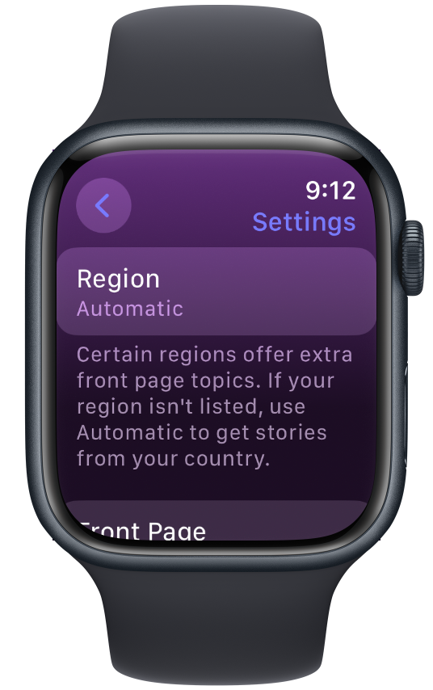

Getting Started
Launch The Brief on your Apple Watch, and that's it. Your stories will appear right there. No need to go scouring for RSS feeds.
Search
Tap the purple magnifying glass icon at the top of the front page to make a search. Type in a query, press Done, and see articles that match your term.
Settings
You can customise The Brief's front page to see articles that match your interests. Tap the pink gear icon at the top of the front page to open Settings.
Region
Certain regions offer extra front page topics, which you can access by setting your region here. If your region isn't listed, use Automatic to get stories from your country.
Category
Choose the topic of articles that appear on the front page. Depending on your region, you'll see either two options: 'General Headlines' and 'Custom Term', or those plus additional pre-set topics.
If you choose 'Custom Term', you'll need to type it in.
Need more help, want to report a bug, or suggest a feature? Email me at application.help.m@gmail.com.